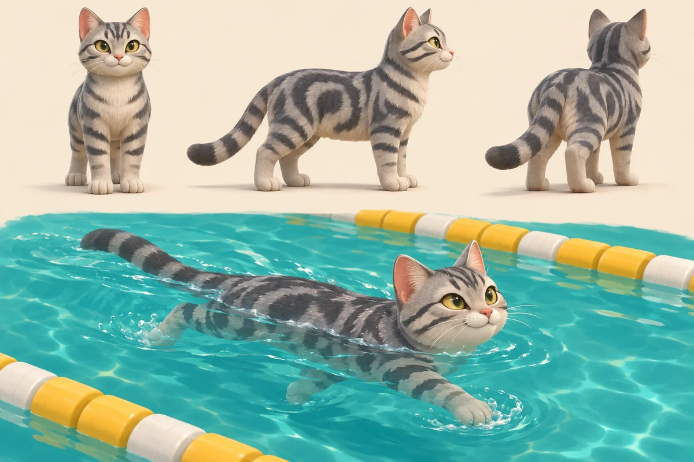
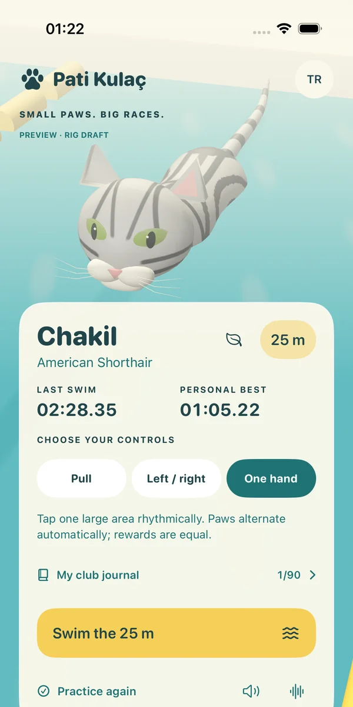
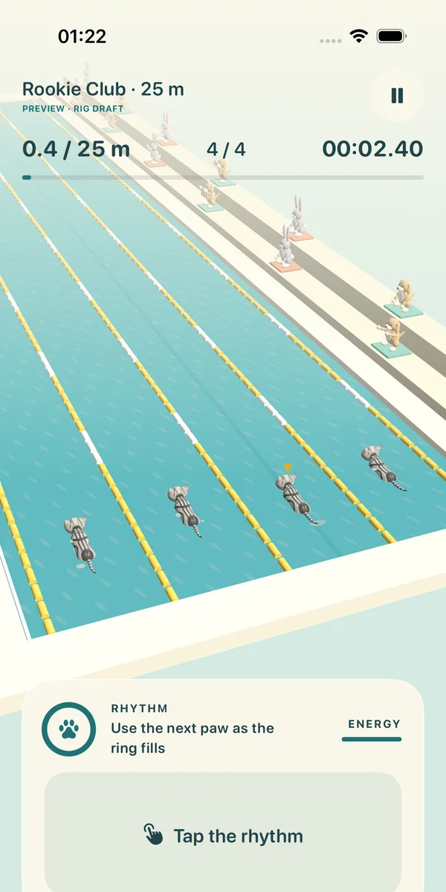
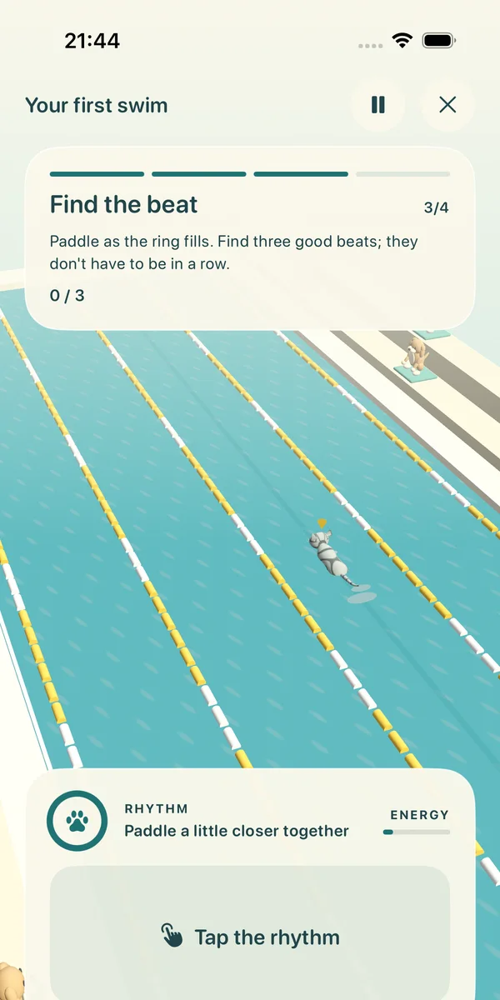

OYUN · iPHONE · 3D
Pati Kulaç
Parmak ritmini pati vuruşuna çeviren kedi yüzme yarışı
İki parmakla sırayla suyu yakala, ritmi tuttur, kulaçlar arasında süzülerek enerjini topla. Üç boyutlu bir havuzda fizikle yüzen kediler, dört kulvarlı kısa ve tempolu bir 25 metre yarışı.
Şu an erken prototip aşamasında ve iç TestFlight'ta. Fizik çekirdeği, dört kulvarlı yarış ve ilk kedi iskeleti çalışıyor; kedi modelleri, yüz ifadeleri ve yeni parkurlar hâlâ yapım aşamasında. Aşağıdaki kareler doğrudan erken prototip yapısından ve Çakıl'ın karakter tasarım paftasından.
01 · NASIL OYNANIR
Suyu yakala, ritmi koru, süzül
Alt iki bölgede sırayla kısa aşağı çekişlerle ya da ritim halkası doldukça dokunarak kulaç atarsın. Çok erken basmak veya aynı patiyi üst üste zorlamak ek hız vermez.
Her kulaç zamana yayılan bir itki üretir. Kulaçlar arasında bıraktığın kısa boşlukta kedi suda süzülür ve enerjisini toplar.
İlk kulaç, dönüşümlü pati, ritim aralığı ve süzülerek enerji toplama adımlarını öğreten isteğe bağlı havuz alıştırması.
02 · HAVUZDA NE VAR
Dört kulvar, gerçek süreler
ARKA ÇAPRAZ KAMERA
Geri sayımdan bitiş duvarına kadar yüzücüyü ve yan kulvarları aynı kadrajda tutan yarış kamerası.
FİZİK TABANLI RAKİPLER
Yan kulvarlardaki üç kedi hazır animasyonla değil, aynı su fiziği ve beş farklı yüzme profiliyle yarışır.
TRİBÜN VE SESLER
Köpek ve tavşan seyircilerin yarış olaylarına tepki verdiği tribünler; motor olaylarına bağlı su ve kulaç sesleri.
ATOMİK KAYIT
Son 20 yüzüş, kontrol moduna göre ayrılan kişisel rekorlar ve ilk kariyer görevi cihaz içinde korunur.
03 · EKRANLAR VE KONSEPT
Erken prototip ve konsept kareleri




04 · YAPIM NOTLARI
Nasıl yapıldı?
SwiftUI ve RealityKit ile yazılıyor. Yüzme fiziği görüntü karesinden bağımsız çalışan CatSwimCore paketinde 120 Hz sabit adımla hesaplanıyor: kaldırma kuvveti, suya göre direnç, zamana yayılan pati itkisi ve yorulma tek bir fizik kaynağından çıkıyor. İlk yüzücü kedi Çakıl, Blender'da hazırlanan 30 kemikli USDZ iskeletiyle yüzüyor; dört patinin suya değdiği noktalarda Metal tabanlı su ve köpük efektleri üretiliyor.
Geliştirici: Ali Emre Büyükkol.